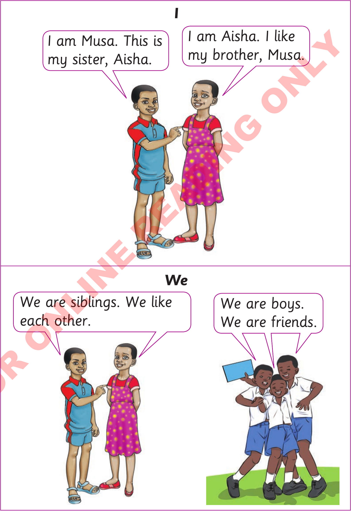

Activity 2: Practising using pronouns orally or using sign language
(a)
Read / sign the sentences in the bubbles.

I
I am Musa. This is my sister, Aisha.
I am Aisha. I like my brother, Musa.
We
We are siblings. We like each other.
We are boys. We are friends.